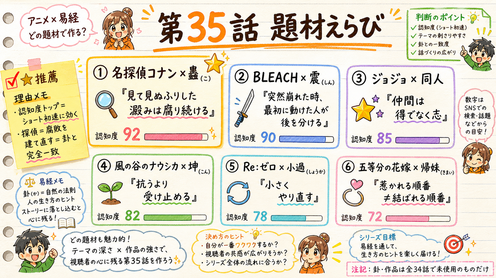

アニメ×易経・全64話 ／ 制作承認ゲート
第35話 企画 — どの題材×卦で作る？
content/055・公開枠 2026-07-14 予定。人間承認ゲート ここで止まって、あなたの「これで作って」を待ちます。
TL;DR（3行）
- 全34話で使った卦・作品を除外 → topic-radarの未使用卦×未使用大型IPだけに絞った6候補。
- 新IPは過去実績データが無い（channelPerf/themeEff＝全0.50）。現状の律速＝SHORTSフィード初速＝認知度が効く。
- 推薦＝名探偵コナン × 蠱（こ）。認知度トップ0.92 ＆ 卦「腐敗を建て直す」が探偵という物語と構造一致。

6候補の俯瞰ボード（左上★＝推薦のコナン×蠱）。数字は topic-radar / growth-state の実測由来。
候補6つ（すべて未使用卦×未使用大型IP）
| 題材 | 卦 | 認知度 | radar総合 | 飽和
低い=競合少 | 人生の機微（自分ごと転移） |
|---|
名探偵コナン 🔍
★推薦 | 蠱 こ
#18 建て直し | 0.92
最高 | 53 | 0.55 | 見て見ぬふりした澱みは、正されるまで腐り続ける |
BLEACH 🗡️
対抗 | 震 しん
#51 衝撃 | 0.90 | 58 | 0.45 | 突然すべて崩れた時、最初に動けた人が後を分ける |
| ジョジョ ⭐ | 同人 | 0.85 | 55 | 0.50 | 本当の仲間は、得でなく志でつながる |
| 風の谷のナウシカ 🌱 | 坤 こん | 0.82 | 59 | 0.35最小 | 抗うより受け止める人が、いちばん遠くまで進む |
| Re:ゼロ 🔁 | 小過 | 0.78 | 54 | 0.45 | 一発逆転より、小さくやり直す方が確かに進む |
| 五等分の花嫁 💍 | 帰妹 | 0.72 | 52 | 0.40 | 惹かれる順番と、結ばれる順番は違う |
※ channelPerf/themeEff は新IPのため全0.50（実データ無し）。差がつくのは認知度＝ショートのコールドスタート初速の律速。現状 growth-state＝再生95.2%がSHORTSフィード依存・シェアほぼ0。
推薦の理由 — 名探偵コナン × 蠱
なぜこの組み合わせか
- 認知度0.92（候補最高） — いま伸びの律速はSHORTSフィード初速。誰もが知っている入口が一番効く。
- 卦と物語が構造一致：蠱＝山(止まって動かない)の下で風(本来動くべきもの)が淀む形＝「見て見ぬふりされた澱みの堆積」。探偵＝その澱みを暴いて建て直す者。事件は突然起きていない、ずっと前から腐っていた。
- 処方箋（動画の本体）が作りやすい：蠱は爻辞が「親の澱みをどう建て直すか（幹父之蠱）」を段階で語る稀有な卦。「どうすればいいか」に具体で答えられる。
- registry効率：蠱は意味が特殊（腐敗・相続・建て直し）で他作品に当てにくい卦。コナンで使うのが噛み合う。
卦辞「WORK ON WHAT HAS BEEN SPOILED／蠱は元いに亨る。大川を渉るに利ろし。甲に先だつ三日、甲に後るる三日。」（db/hexagrams.json #18）
6幕アウトライン（v2.2・タイトルは台本確定後）
- 違和感（30秒）：コナンは「事件を解く」話だと思われてる。でも毎回やってるのは、放置された澱みの掘り起こし。
- 観察（3-5分）：事件の構造＝恨み・隠蔽・先延ばしが何年も熟成して、ある日"事件"として噴き出す。作中実例2-3件（fact_checkで一次確認してから使用）。
- 種明かし（2-3分）：これが蠱という卦。六爻図(GUA6)で構造を提示＋卦辞。
- 風刺の刃（30秒-1分）：刃は作品でなく社会と自分へ。「まだ大丈夫」の先延ばしは"何もしてない"のでなく、腐敗を進めている。
- 処方箋（1.5-3分・本体）：蠱の爻辞で建て直しを段階に：①原因を遡る ②責めずに引き継ぐ ③建て直しは渡河に値する大事。先延ばしを今日どう一段だけ動かすか。
- 余韻（30秒）：コナンが去った後、関係者は澱みと向き合い直す。解決は終わりでなく、建て直しの始まり。
比較作品（同じ蠱の入口で違う出口）：相続・家業の澱みを建て直す／放置する物語を1-2本（台本段階で確定）。
対抗 — BLEACH × 震（しん）
認知度0.90・radar総合は候補最高の58・浮世絵映え最高（雷／刀／喪失の夜）。卦＝雷の上に雷＝衝撃。一護が家族を失った突然の夜に刀を取った＝「突然すべて崩れた時、最初に動けた人が後を分ける」。
卦辞「SHOCK brings success／震は亨る。震来たりて虩虩たり、笑言啞啞たり。震、百里を驚かすも、匕鬯を喪わず。」（db #51）＝衝撃に動じず祭器を取り落とさぬ者が後を分ける。
コナンとの違い：物語の力強さ・絵の映えはBLEACHが上。卦と物語の"構造の噛み合い"と処方箋の作りやすさはコナン×蠱が上。
あなたに決めてほしいこと
第35話を「どの題材×卦」で作るか。選んだらこの企画で台本制作（Step2）へ進みます。タイトルは台本が固まってから別途3案出します（今は決めません）。
A. 名探偵コナン × 蠱（推薦）
認知度トップ＋卦と物語が構造一致＋処方箋が強い。「これで作って」でStep2着手・07-14枠をclaim。
B. BLEACH × 震
映え・物語の力で行くなら。卦辞も衝撃→再起で綺麗に立つ。
C. 他の候補にする
ジョジョ×同人 ／ ナウシカ×坤（飽和最小） ／ Re:ゼロ×小過 ／ 五等分×帰妹 から指定。
D. 6幕の中身を直してから決める
狙い・比較作品・刃の向きなどを調整したい点を指示。